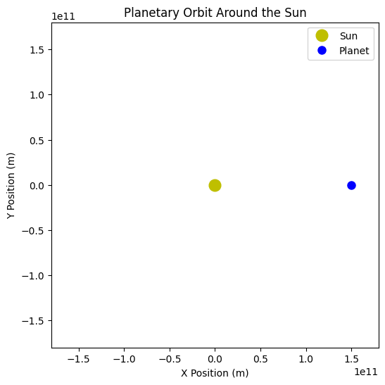

Problem 1
Orbital Period and Orbital Radius
1. Introduction
The relationship between the square of the orbital period and the cube of the orbital radius, known as Kepler's Third Law, is a fundamental principle in celestial mechanics. This law describes how planetary bodies orbit a central mass and helps in calculating planetary distances, satellite dynamics, and even exoplanet detection.
Kepler's Third Law is mathematically expressed as:
where:
- \(T\) is the orbital period,
- \(r\) is the orbital radius,
- \(G\) is the gravitational constant,
- \(M\) is the mass of the central body.
This law applies to celestial bodies in stable circular orbits and provides key insights into planetary systems.
2. Theoretical Derivation
Using Newton’s Law of Universal Gravitation and the concept of centripetal force, we derive Kepler’s Third Law.
- Gravitational Force: $$ F_g = \frac{GMm}{r^2} $$
- Centripetal Force: $$ F_c = \frac{m v^2}{r} $$
- Equating these forces and solving for \(T\), we obtain Kepler’s Third Law.
3. Computational Verification
To verify Kepler’s Third Law computationally, we simulate a planetary orbit and analyze the relationship between \(T^2\) and \(r^3\).
3.1 Simulating Orbital Motion

3.2 Graphical Analysis of Kepler’s Third Law
Now, let's numerically verify Kepler’s Third Law by simulating different orbital radii and comparing \( T^2 \) vs. \( r^3 \).
Below is the graphical verification of Kepler’s Third Law:
4. Discussion and Applications
4.1 Implications in Astronomy
- Used to estimate planetary masses and distances.
- Helps in predicting satellite orbits around Earth.
- Supports exoplanet detection by analyzing orbital periods.
4.2 Extending to Elliptical Orbits
Kepler’s Third Law also applies to elliptical orbits by replacing \(r\) with the semi-major axis \(a\):
This allows astronomers to calculate orbits for non-circular paths, common in planetary motion.
4.3 Real-World Examples
- The Moon’s orbit around Earth follows Kepler’s Law with high precision.
- GPS satellites rely on these principles to maintain stable orbits.
- Space agencies use Kepler’s Law for mission planning, such as Mars rover landings.
5. Conclusion
Kepler’s Third Law provides a foundational understanding of orbital mechanics, bridging theoretical physics with real-world applications. By numerically simulating orbits and verifying the law’s predictions, we can deepen our comprehension of celestial dynamics and planetary systems.